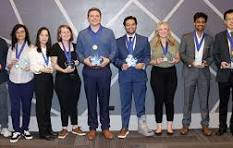
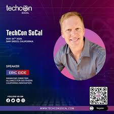

What is TechCon 2025?
TechCon 2025 is the premier conference for technology enthusiasts and professionals. The event will showcase the latest advancements in technology and feature industry-leading speakers. Join us for an unforgettable experience filled with insightful talks, hands-on workshops, and networking opportunities.

Mission
Our mission at TechCon 2025 is to foster innovation and collaboration within the technology community. We aim to provide a platform for knowledge sharing, skill development, and networking among professionals, enthusiasts, and thought leaders.
History
TechCon has been a staple in the tech community since its inception in 2010. Over the years, it has grown from a small gathering of tech enthusiasts to a large-scale conference attracting thousands of participants from around the world.
Past Speakers
In previous years, TechCon has featured renowned speakers such as Dr. Ada Lovelace, Mr. Alan Turing, and Ms. Grace Hopper. Their insights and expertise have greatly contributed to the success of the conference. 